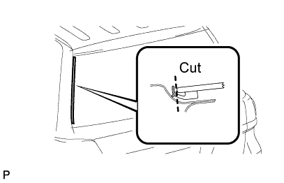
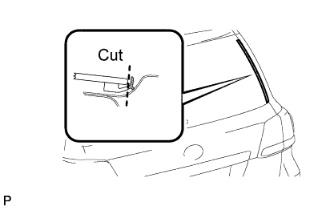
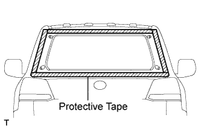
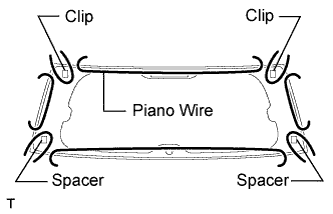
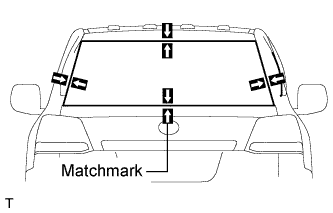
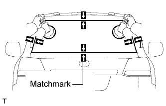

BACK WINDOW GLASS > REMOVAL |
| 1. DISCONNECT CABLE FROM NEGATIVE BATTERY TERMINAL |
| 2. REMOVE CENTER BACK DOOR GARNISH |
 |
Detach the 5 clips and 2 claws, and remove the back door garnish.
| 3. REMOVE BACK DOOR SIDE GARNISH LH |
 |
Detach the 3 clips and remove the back door side garnish.
| 4. REMOVE BACK DOOR SIDE GARNISH RH |
| 5. REMOVE ASSIST GRIP (for Face to Face Seat Type) |
 |
Remove the 2 screws and assist grip.
| 6. REMOVE NO. 2 BACK DOOR SERVICE HOLE COVER (for Face to Face Seat Type) |
 |
Using a screwdriver, detach the 4 claws and remove the back door service hole cover.
Disconnect connector.
| 7. REMOVE POWER BACK DOOR MAIN SWITCH (for Face to Face Seat Type) |
 |
Detach the 2 claws and remove the power back door main switch.
| 8. REMOVE BACK DOOR GARNISH |
 |
Using a screwdriver, detach the 14 clips and remove the back door garnish.
| 9. REMOVE BACK DOOR GLASS CHANNEL LH (w/ Rear Spoiler) |
 |
Using a clip remover, remove the clip.
Remove the back door glass channel LH.
| 10. REMOVE BACK DOOR GLASS CHANNEL RH (w/ Rear Spoiler) |
 |
Using a clip remover, remove the clip.
Remove the back door glass channel RH.
| 11. REMOVE REAR SPOILER SUB-ASSEMBLY (w/ Rear Spoiler) |
 |
Remove the 4 bolts.
 |
Detach the 3 clips and remove the rear spoiler.
| 12. REMOVE REAR WIPER ARM (w/ Rear Wiper) |
 |
Open the cover.
Remove the nut and rear wiper arm.
| 13. REMOVE REAR WIPER MOTOR GROMMET (w/ Rear Wiper) |
 |
Detach the wiper motor grommet.
| 14. REMOVE REAR WIPER MOTOR ASSEMBLY (w/ Rear Wiper) |
 |
Disconnect the connector.
Remove the 3 bolts and rear wiper motor assembly.
| 15. REMOVE BACK WINDOW MOULDING OUTSIDE LH |
 |
Using a knife, cut off the moulding as shown in the illustration.
Pull the shaded area shown in the illustration by the hand to remove the back window moulding outside.
| 16. REMOVE BACK WINDOW MOULDING OUTSIDE |
 |
Using a knife, cut off the moulding as shown in the illustration.
Pull the shaded area shown in the illustration by the hand to remove the back window moulding outside.
| 17. REMOVE BACK WINDOW GLASS |
 |
Apply protective tape to the outer surface of the vehicle body to prevent scratches.
Disconnect the connectors.
 |
From the interior, insert a piano wire between the vehicle body and back window glass as shown in the illustration.
Tie objects that can serve as handles (for example, wooden blocks) to both wire ends.
 |
Place matchmarks over the glass and vehicle body on the locations indicated in the illustration.
Cut through the adhesive by pulling the piano wire around the back window glass.
 |
Using suction cups, remove the back window glass.
| 18. CLEAN VEHICLE BODY |
 |
Using a scraper, remove the moulding and adhesive from the back window glass.
Clean and shape the contact surface of the vehicle body.
On the contact surface of the vehicle body, use a knife to cut away excess adhesive as shown in the illustration.
Clean the contact surface of the vehicle body with cleaner.